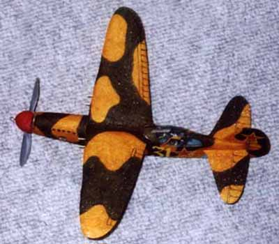

|
| ||
|

| Wingspan: 13" Weight: 12 grams The Nikitin Schevchenko IS-4 is made completely of white foam. It was finished with markers and homemade decals. I have timed it indoors at Norwich, where the ceiling is around 20 feet high. It usually does over 40 seconds, and its best time to date was over 53 seconds. The motor is 1 strand of 1/16 and 1 strand of 3/32, each about 18" long. The prop is a 4.75" gray Peck Polymers that has been scraped, sanded, etc.
| |
Copyright 1999, Thayer Syme. All rights reserved